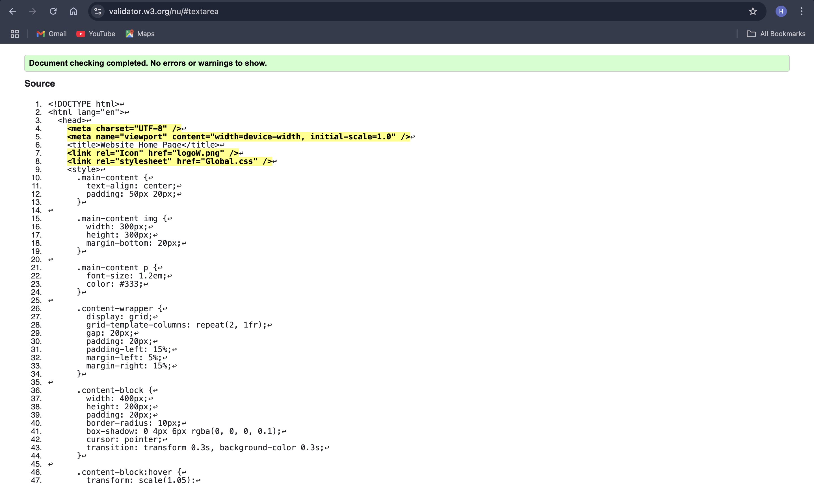
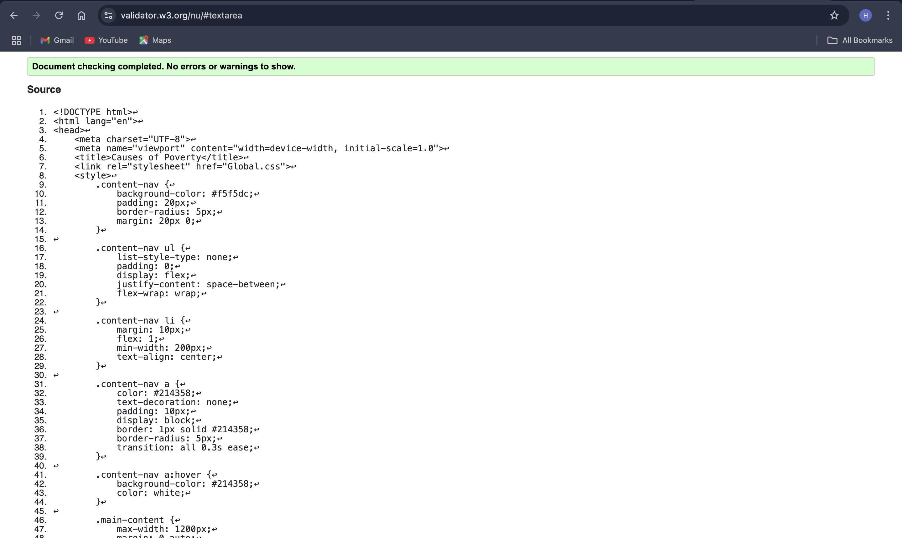

Home Page validation report
I validated the HTML code for my home page using an online HTML validation tool to ensure it met web standards and best practices. The validation process confirmed that there were no errors in the code, indicating that the structure, syntax, and elements were implemented correctly. This not only ensures the page’s technical accuracy but also supports better compatibility across browsers and devices. The positive result highlights the effort put into crafting a clean, well-organized, and compliant web page, reflecting an understanding of proper HTML development principles.
Back to Page Editor page
Table validation report
I validated the HTML code for my table page and was pleased to find no errors, which reassured me that the code was written correctly and adhered to web standards. Validating the code is an essential step in web development, as it ensures that the structure is well-formed and free of syntax issues that could lead to unexpected behavior or accessibility challenges. This process not only confirms the technical accuracy of the page but also helps identify potential improvements early, saving time and effort during troubleshooting. Validating the code also enhances cross-browser compatibility and ensures the table page is accessible to all users, aligning with best practices and compliance standards. This experience reinforced the importance of validation in maintaining the quality and reliability of web content.

Back to Page Editor page
Content Page validation report
I validated the HTML code for my content page and found no errors, which gave me confidence in the quality and structure of my work. The validation process was invaluable, as it confirmed that the code adhered to web standards and was free of syntax issues that could cause functionality or accessibility problems. This step ensures the page performs consistently across different browsers and devices while maintaining compliance with accessibility guidelines. Validating the content page highlighted how critical this practice is in delivering a reliable, user-friendly experience and in upholding the professional quality of web development.
